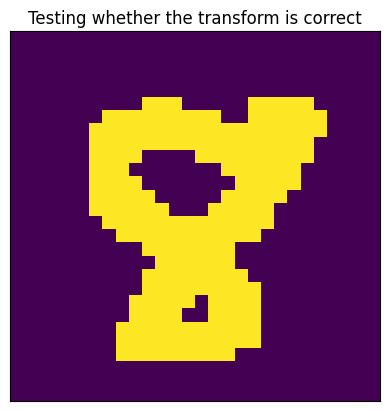
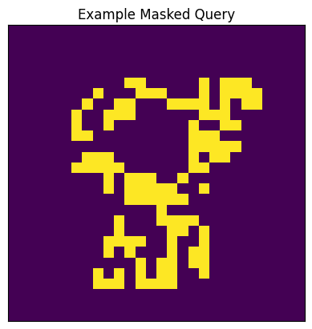
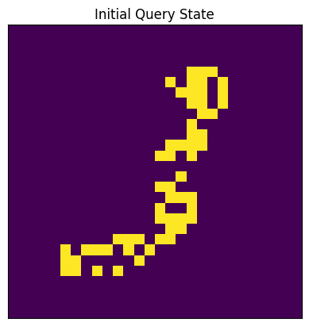
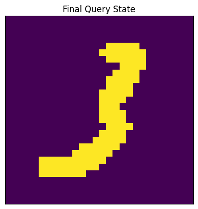
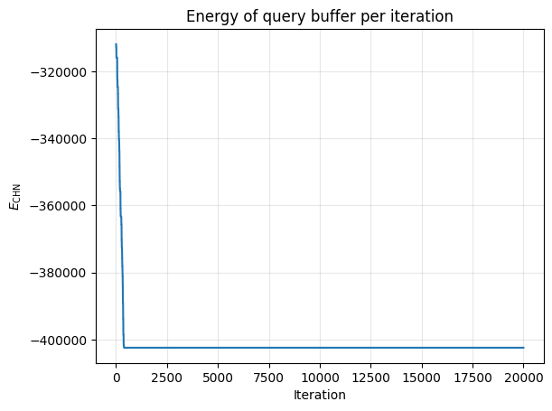
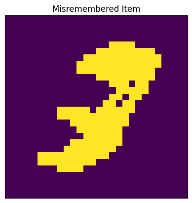
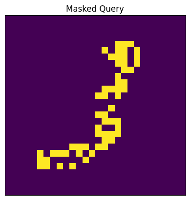
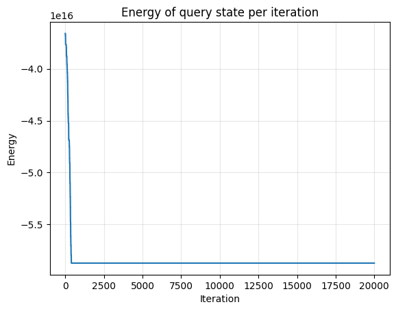

DATA_DIR = "../data/mnist"
pxw, pxh = 28, 28
def transform(data):
data = np.array(data, dtype=jnp.float32)
data = rearrange(data, "w h -> (w h)")
data[data > 0.0] = 1.0
data[data == 0.0] = -1.0
return data
mnist_train = MNIST(DATA_DIR, train=True, transform=transform)
mnist_data_loader = DataLoader(mnist_train, batch_size=128, shuffle=True)
mnist_it = iter(mnist_data_loader)
mnist_data, _ = next(mnist_it)hopfield
Implementation of binary Hopfield Networks and Dense Associative Memories.
In this module we implement classical binary Hopfield Networks as well as Dense Associative Memories, which are both forms of energy-based Associative Memories. Energy-based Associative Memories (AMs) are recursive neural networks which are content-addressable memories. The main bulk of the module is implemented using the tutorial at https://tutorial.amemory.net/tutorial/dense_storage.html as a reference. Please read this first, as it contains much more information, and the implementation is largely identical in layout and function.
Generic Hopfield Networks
In it’s most generic case, defining an associative memory in the Hopfield network-style requires only one thing: defining an energy function. An energy function \(E\) is a function of the parameters of the network to a real number \(x\), ideally a measure of the global similarity between the query state \(\xi\) and the stored traces \(\Xi\). As we do asynchronous recall with an energy-based AM, the network iteratively reduces the energy of the query state by randomly “flipping a bit” of the query state, iff flipping that bit reduces the energy of the query state.
There are other important properties of the energy function of a Hopfield network: namely, that it is convex. Convexity of the function guarantees that there is some local minima in the “energy landscape” (the range of the energy-function). Local minima in the energy landscape are ideally equivalent to stored patterns in the network: however, if the AM reaches critical capacity, then the local minima of the state do not correspond to the stored patterns. These states are called spurious states. Cognitively speaking, these can be situations in which there is some kind of error in recall, giving us a pattern which is unintelligible.
GenericAM
GenericAM (Xi:jaxtyping.Float[Array,'KD'])
The two important functions here are GenericAM.async_update and GenericAM.async_recall:
GenericAM.async_update
GenericAM.async_update (current_query_state:jaxtyping.Float[Array,'D'], idx:int)
Flip a bit in the current query state at given index if it lowers the energy.
GenericAM.async_recall
GenericAM.async_recall (initial_query_state:jaxtyping.Float[Array,'D'], nsteps:int=20000, key:jax.Array=Array([0, 0], dtype=uint32))
Iteratively update the initial query state in order to reduce its energy.
Classical Hopfield Network
The Classical Hopfield network is the energy-based AM that was first proposed in Hopfield (1982) and Hopfield (1984). It has an energy function which describes the dot-product between the query state and the stored patterns in the associative memory: \[ E_\text{CHN}(\sigma) = - \frac{1}{2} \sum_{\mu} \left( \sum_i \xi^\mu_i \sigma_i \right)^2, \tag{1} \] where each \(\xi^\mu\) is a stored pattern.
ClassicalHopfield
ClassicalHopfield (Xi:jaxtyping.Float[Array,'KD'])
Classical Hopfield Network defined by the energy function in equation (1).
ClassicalHopfield.energy
ClassicalHopfield.energy (query:jaxtyping.Float[Array,'D'])
Compute the energy of the query state.
Example
In order to demonstrate the efficacy (and shortcomings) of the classical Hopfield Network, we will do a simple recall task using the MNIST dataset.
def show_im(im: Float[Array, " WH"], title: str = "") -> None:
im = rearrange(im, "(w h) -> w h", w=pxw, h=pxh)
plt.imshow(im)
plt.title(title)
plt.xticks([])
plt.yticks([])
show_im(mnist_data[0], title="Testing whether the transform is correct")
def mask(
state: Float[Array, " D"], pct_mask: float = 0.5, key: jax.Array = jr.PRNGKey(0)
) -> Float[Array, " D"]:
D = state.shape[-1]
bits_to_mask = jr.choice(key, np.arange(D), shape=(int(D * pct_mask),))
return state.at[bits_to_mask].set(-1.0)
show_im(
mask(jnp.array(mnist_data[0], dtype=jnp.float32), 0.5), title="Example Masked Query"
)
def iterate_recall(
am: GenericAM,
query_state: Float[Array, " D"],
save: bool = True,
key: jax.Array = jr.PRNGKey(0),
**kwargs,
):
final_query_state, (frames, energies) = am.async_recall(
query_state, key=key, **kwargs
)
return final_query_state, (frames, energies)
Xi = jnp.array(mnist_data[:2], dtype=jnp.float32)
chn = ClassicalHopfield(Xi)
query = Xi[1]
masked_query = mask(query)
final_query_state, (frames, energies) = iterate_recall(chn, masked_query)
show_im(masked_query, "Initial Query State")
show_im(final_query_state, "Final Query State")
We can also plot out the energy of the network over time:
plt.plot(energies)
plt.title("Energy of query buffer per iteration")
plt.grid(True, alpha=0.3)
plt.xlabel("Iteration")
plt.ylabel(r"$E_\text{CHN}$")
plt.show()
To demonstrate the low critical capacity of this associative memory, we really only need to introduce one more pattern:
Xi = jnp.array(mnist_data[:3])
chn = ClassicalHopfield(Xi)
query = Xi[1]
masked_query = mask(query)
final_query_state, (frames, energies) = iterate_recall(chn, masked_query)
show_im(masked_query, "Masked Image")show_im(final_query_state, "Misremembered Item")
This is what I call the omnidigit. There is some interesting research pointing towards the shift between generative capacities and memory capacities after AMs reach their critical capacity, e.g. Pham, et al. (2025) and a worked out tutorial here. But, we will not be covering this here.
Dense Associative Memories
While Hopfield networks are a wonderful discovery, they have a severe limitation. Their critical capacity is, famously, around \(0.14 N\), where \(N\) is the number of patterns stored in the network. To overcome this, a general framework for associative memories, called Dense Associative Memories (DAMs) was proposed in Krotov & Hopfield (2016). The key intuition behind the increased capacity is to maximize the separation of stored patterns in memory Millidge, et al. (2022). Recall, energy-based AMs “misremember” stored patterns whenever the local minima of the energy landscape become conjoined, i.e. the minima do not correspond with the intended stored patterns. Thus, to increase the capacity, we need to increase the distance between stored patterns. In order to do this, Krotov & Hopfield (2016) found that if we introduce a non-linearity into the energy function then we can make the network “emphasize” high-similarities between the query vector and stored patterns, and further “de-emphasize” low similarity values.
Single-shot AMs, which learn in one non-asynchronous pass, that perform similar operations will be discussed in 01_minerva.ipynb.
DAM
DAM (Xi:jaxtyping.Float[Array,'KD'], polynomial:int, rectified:bool=True)
Dense Associative Memory.
The important function here is, of course, the energy function:
DAM.energy
DAM.energy (query_state:jaxtyping.Float[Array,'D'])
Compute the energy of the query state.
The energy function takes on the general form of: \[ E_\text{DAM}(\sigma) = - \sum_\mu \left( \sum_i F_n (\xi^\mu_i \sigma_i) \right), \tag{2} \] where \(F_n\) is the polynomial of order \(n\), which increases separation.
DAM.F_n
DAM.F_n (sims:jaxtyping.Float[Array,'D'])
The polynomial function inside of the energy function.
| Type | Details | |
|---|---|---|
| sims | Float[Array, ‘D’] | The dot-product similarity scores |
Example
Like we did with the Classical Hopfield network, we will also show an example. This time, however, we will include a lot more stored patterns in order to demonstrate that the associative memory has a higher critical capacity.
Xi = jnp.array(mnist_data[:10])
dam = DAM(Xi, polynomial=6, rectified=True)
query = Xi[1]
show_im(query, "Unmasked Query")masked_query = mask(query)
show_im(masked_query, "Masked Query")
final_query_state, (frames, energies) = iterate_recall(dam, masked_query)
show_im(final_query_state, "Final Query State")plt.plot(energies)
plt.title("Energy of query state per iteration")
plt.grid(True, alpha=0.3)
plt.xlabel("Iteration")
plt.ylabel("Energy")
plt.show()